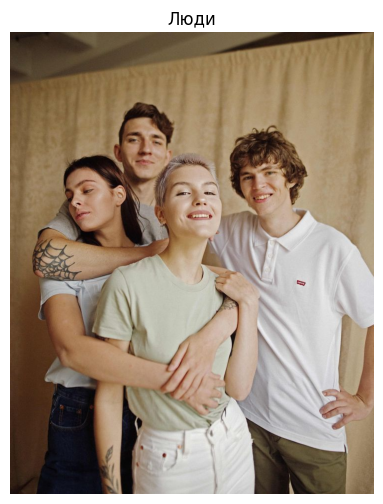
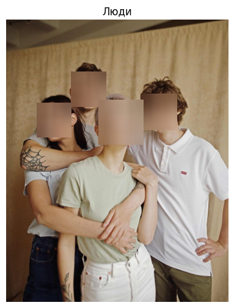
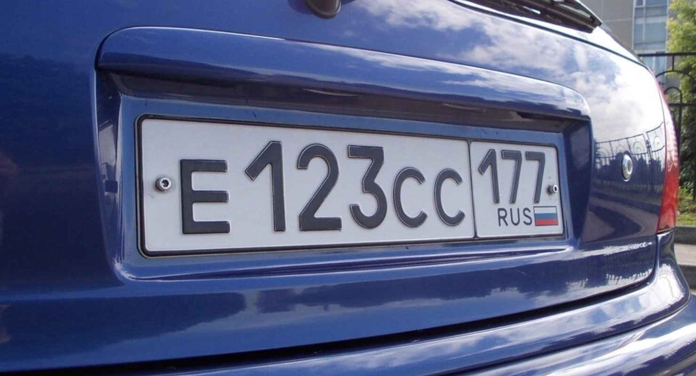

Обнаружение лиц с использованием OpenCV
Этот проект демонстрирует использование библиотеки OpenCV для обнаружения лиц на изображениях. Проект базируется на использовании каскадов Хаара — предварительно обученных классификаторов, встроенных в OpenCV. Мы покажем, как загрузить классификатор, применить его к изображению и визуализировать результат.
1. Задачи проекта
- Демонстрация работы библиотеки OpenCV для компьютерного зрения.
- Применение каскадов Хаара для обнаружения лиц, номера машины на изображении.
- Создание проекта, который можно расширить для видео или потоковых данных.
2. Код проекта
Ниже приведен код на Python, который реализует обнаружение лиц на изображении. Код считывает изображение, применяет классификатор и сохраняет результат с выделенными областями лица.
import cv2
from google.colab.patches import cv2_imshow
def blur_faces_and_plates(image_path, output_path):
# Загрузка изображения
image = cv2.imread(image_path)
if image is None:
print("Ошибка: не удалось загрузить изображение.")
return
# Загрузка классификаторов
face_cascade = cv2.CascadeClassifier(cv2.data.haarcascades + 'haarcascade_frontalface_default.xml')
plate_cascade = cv2.CascadeClassifier(cv2.data.haarcascades + 'haarcascade_russian_plate_number.xml')
# Преобразование изображения в оттенки серого
gray = cv2.cvtColor(image, cv2.COLOR_BGR2GRAY)
# Обнаружение лиц
faces = face_cascade.detectMultiScale(gray, scaleFactor=1.1, minNeighbors=5, minSize=(30, 30))
# Обнаружение номеров автомобилей
plates = plate_cascade.detectMultiScale(gray, scaleFactor=1.1, minNeighbors=5, minSize=(30, 30))
# Размытие лиц
for (x, y, w, h) in faces:
roi = image[y:y+h, x:x+w]
blurred = cv2.GaussianBlur(roi, (51, 51), 30)
image[y:y+h, x:x+w] = blurred
# Размытие номеров автомобилей
for (x, y, w, h) in plates:
roi = image[y:y+h, x:x+w]
blurred = cv2.GaussianBlur(roi, (101, 101), 30)
image[y:y+h, x:x+w] = blurred
# Сохранение результата
cv2.imwrite(output_path, image)
print(f"Изображение с размытием сохранено: {output_path}")
# Отображение изображения
cv2_imshow(image)
# Пример использования
input_image = "v00.png"
output_image = "output.jpg"
blur_faces_and_plates(input_image, output_image)
input_image = "original.jpg"
output_image = "output.jpg"
blur_faces_and_plates(input_image, output_image)
3. Результат
На изображении ниже показано, как программа обнаруживает лица, номера машины на входном изображении.
До обработки:
После обработки:
До обработки:
После обработки:
Проект демонстрирует, как легко использовать OpenCV для решения этой задачи, и может быть расширен для работы с видео или потоковыми данными.